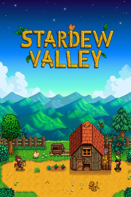

Simulation · 2016
Stardew Valley
One developer, four years, and a farm millions moved into.

Cover: Wikipedia: Stardew Valley
Facts
- Released
- 2016-02-26
- Genre
- Sim
- Category
- Simulation
- Platforms
- Mobile, Nintendo, PC, PlayStation, Xbox
- Developers
- ConcernedApe LLC
- Publishers
- ConcernedApe LLC
PC requirements
- Minimum
- [object Object]